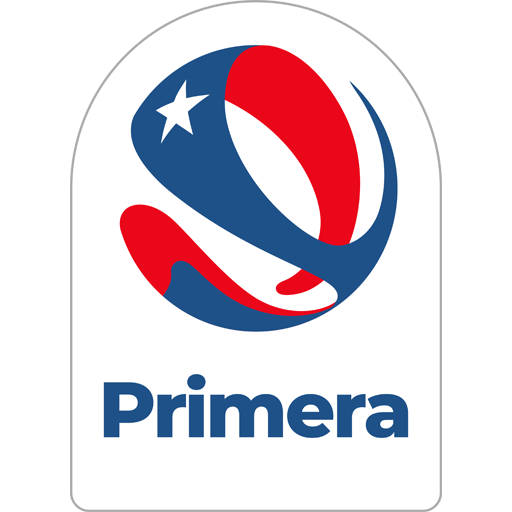

Historia
-
Creación
Un 16 de abril de 1925, un grupo de jóvenes liderados por los hermanos Arellano decidió abandonar el club Magallanes y formar su propio equipo: nacía ese día el club de fútbol Colo-Colo. Sus triunfos en la Liga Metropolitana, lo convirtieron de inmediato en uno de los clubes más populares. Gozando de esta fama, Colo-Colo realizó giras por todo el país y un viaje por Sudamérica y España, en 1927. En el año 1953 y luego de no haber ganado ningún campeonato en cerca de cinco años, Colo-Colo se consagró en el primer lugar del torneo de fútbol chileno. El dúo formado por Alejandro Bascuñán y Germán del Campo, de larga trayectoria en el ámbito de la música de raíz folclórica, interpretó como homenaje para la ocasión, la marcha- corrido "Colo-Colo".
Información
Títulos
-

Nacionales(M)
Primera División: 33
Copa Chile: 14
Super Copa: 3
Nacionales(F)
Primera División: 15
Copa de Campeonas: 3
-
Internacionales(M)
Libertadores: 1
Recopa Sudamericana: 1
Interamericana: 1
Internacionales(F)
Libertadores: 1
Jugadores
-
Plantel 2024
Brayan Cortés, Fernando De Paul, Omar Carabalí, Martín Ballesteros y Eduardo Villanueva, Óscar Opazo, Bruno Gutiérrez, Jeyson Rojas, Erick Wiemberg, Felipe Yáñez, Alan Saldivia, Maximiliano Falcón, Emiliano Amor, Ramiro González, Daniel Gutiérrez, Esteban Pavez, Arturo Vidal, Leonardo Gil, Vicente Pizarro, César Fuentes, Lucas Soto, Bryan Soto, Diego Plaza, Dylan Portilla e Ignacio Jara, Guillermo Paiva, Cristián Zavala, Marcos Bolados, Leandro Hernández, Carlos Palacios, Matías Moya, Pablo Parra, Damián Pizarro y Leandro Benegas
Información